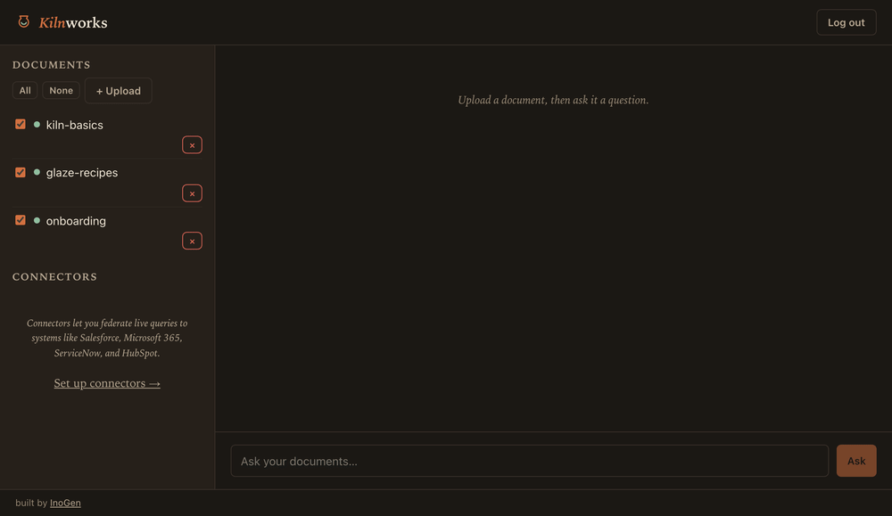

Self-hostable RAG · built by InoGen
Kilnworks is a self-hostable RAG assistant that enforces every document's access rules at retrieval — filtered by who's asking, before anything is ranked or shown. A five-minute Docker quickstart, a fully-offline mode, and your data never leaves your box.
Most RAG stacks bolt permissions on at the UI, after the model has already seen everything. Kilnworks tags every chunk with its source document's ACL and filters the vector search by the caller's identity before ranking. A user simply can't be answered from a document they aren't allowed to see — the model never receives it.
OIDC SSO maps your IdP groups straight to those ACLs.
See it work

docker compose up, then ask.What comes out of the kiln
Every chunk carries its document's access tags; queries are filtered by caller identity before ranking. Permissions you can actually trust.
One docker compose up gets you Postgres + pgvector, a chat UI, and a job queue. Chatting your documents in minutes.
Run chat and embeddings entirely on local Ollama — no API keys, no data leaving your infrastructure. Air-gap friendly.
Text, PDF, DOCX, and tables parse offline. Images (OCR + vision) and audio/video (transcription with timestamps) are opt-in.
Federate answers with read-only queries to Salesforce, Microsoft 365, ServiceNow, and HubSpot — cited, group-gated, queried fresh.
Every chat, embedding, and extraction call is metered per user — chargeback and budget visibility built in, not bolted on.
Bring up the stack, create a user, and ask. Swap the API key for KILNWORKS_FAKE_PROVIDERS=true to try it fully offline first.
Apache-2.0 · Postgres + pgvector · CI-gated evals
# fire it up (or KILNWORKS_FAKE_PROVIDERS=true to go offline) export KILNWORKS_OPENAI_API_KEY=sk-... $ docker compose up -d --build $ docker compose exec api kilnworks create-user you@co.com --password ... # ask your documents — answers come back cited $ curl localhost:8000/ask -H "authorization: Bearer $TOKEN" \ -d '{"question":"What did we ship in Q3?"}'
Kilnworks ships alongside four read-only MCP connectors it can federate with — the same servers you can point any MCP client at.